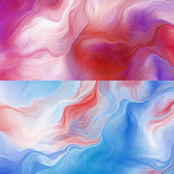
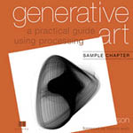
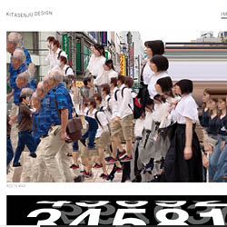

'Emotions, in my experience, aren't covered by single words. I don't believe in sadness, joy, or regret...I've never had the right words to describe them.' ― Jeffrey Eugenides, Middlesex
Summary
In today's world, there is a growing interest in terms of exploring the matters of emotions. From ways on how to embrace feelings and acknowledging them has been a topic a lot of people are interested in discussing. Art - on the other hand - has always been linked with the notions of emotions. Some would even say that art allows poeple to have a cathartic release of pent-up emotions either by creating work or by witnessing and pseudi-experiencing what they see in front of them. Dating as back as 1893, Edvard Munch's painting of 'The Scream' has been one of the most iconic images of art, symbolizing feelings of anxiety. As well as Goye's painting of 'Saturn Devouring His Son' which is dubbed as one of the most distrubing painting there is. Yet these paintings evoke emotions to those who sees them, whether that emotion is disgust, anxiety, fear, or happy and calm feelings. Art has always had profound connections with emotions. Modern examples can be seen with 'Saatchi & Saatchi Wellness UK' which explores emotions in terms of generative art. Thus, this is one of the reason as of how our thoughts of combining emotions into our project came to be. Utilizing Generative Art as a medium, we thought of exploring different range of emotions for people to both create and witness, tha they can relate and feel - even perhaps for them have fun during the explorations.
Francisco Goya ' Saturn
Devouring His Son' (1819–1823)
& Edvard Munch 'The Scream' (1893)

'Move The World'
Saatchi & Saatchi Wellness UK
(2017)
Generative Design Probes
The Probes I chose to do go with is Generative Design probe.
The reason being that looking from all of the book Andreas gave, Generative Design is what peeked my interest the most. So I began to search for some references regarding generative Art and Design! There’s a sentence in the ‘Generative Art : A Practical Guide Using Processing’ by Matt Pearson that perfectly describes the reason why I’m interested in exploring Generative Art and Generative Design.

Generative Design by
Matt Pearson and Robert Hodgin
& https://weavesilk.com

‘Generative Art is neither programming nor art. Program is an interface between man and machine; clean, logical … Art is an emotional subject. Highly subjective and … definition. Generative Art is the meeting place between the two.’
Looking at the different variety these artist have in regards to Generative Design, most of them is experimental and fun to try out. There's a sense of experience that comes with it that I like and want to learn more of. Therefore for my probe: 'Generative Design and visualizing emotions'.
Wesbtie : www.kitasenjundesign.com
Exercises & Group Comments
In terms of exercises, I find that the examples Andreas gave to be really helpful! I personally also rely on Brice to help me on figuring out some coding difficulties.As for the gorup, I would say that our group has ambitions and also the energy, however I feel like for my skill personally is still not on par with the ambitions that we initially have. Hence, some of the works are not perfected yet. Personally, I still need a lot of time to process and to be able to dissect as well as understand what each function does, and since there is also the need to divide time with 3 other tasks I have for the studio, I feel like the works I’ve done fell a bit short.
As for my contribution to the team, I tried to balance my unpolished coding skill by providing power point presentation and also taking some note and managing the information / insights that we have, as well as a few sketches and ideations in a visual manner which will be shown more in the Artefact and Sketches section.
Computation in Design
Visualizing Emotions